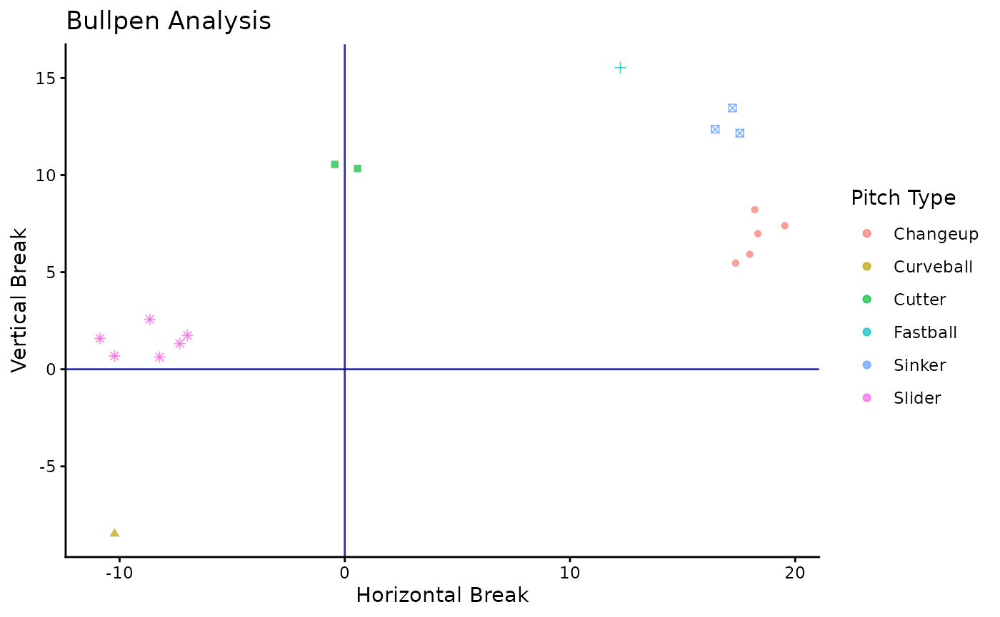
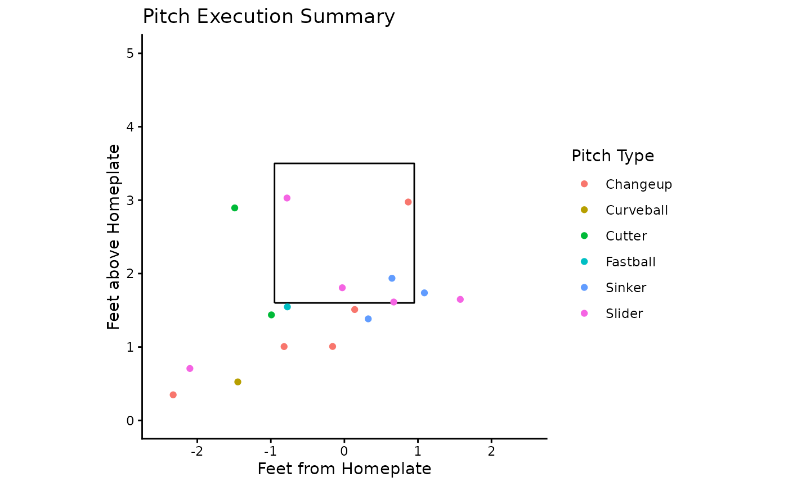

Sample Workflow with BSBReport
Sample_Workflow.RmdThe BSBReport can provide multiple insights into a
bullpen in terms of pitch quality, location, and velocity. To get
started, you can install the package like this
# install.packages("devtools")
# install.packages("remotes")
devtools::install_github("ADC-405-S26/BSBReport")
library(BSBReport)Loading and Exploration
Once installed, we can load the package take a peak at the dataset. This demo data has 25 pitches, and 2 distinct Players (1122334455 and 2233445566). For this workflow, we want to look specifically at Player 1 (1122334455). To only select this players pitches, we get into the second parameter of the package. PlayerId can be specified in any call along with the dataset name. We will make a note of the PlayerId we want and save it for future use.
library(BSBReport)
head(trackman_data)
#> PitcherId TaggedPitchType PitchCount InducedVertBreak HorzBreak
#> 1 1122334455 Fastball 1 15.532 12.240
#> 2 2233445566 Fastball 2 14.226 12.843
#> 3 2233445566 Fastball 3 16.349 13.555
#> 4 2233445566 Cutter 4 11.443 1.223
#> 5 1122334455 Cutter 5 10.342 0.566
#> 6 1122334455 Cutter 6 10.550 -0.445
#> PlateLocHeight PlateLocSide RelSpeed
#> 1 1.54649 -0.77511 88.23450
#> 2 1.62280 0.95868 89.43440
#> 3 2.30084 -0.80157 87.33450
#> 4 1.98087 -0.87330 84.42350
#> 5 2.89414 -1.49088 83.72340
#> 6 1.43716 -0.99222 84.61345
Demo_Player <- 1122334455Pitch_Plot: Movement Data
One essential in bullpen analysis is a pitch movement plot, identifying the various pitch types and their “profiles”. In devleoping a good arsenal, understanding the movement profile is needed to change grips, intent, or general movement trends. To do so, we can use Pitch_Plot. This function outputs both a summary table and a plot of the pitch movement data. In our call, we specify that PlayerId to select for one pitcher.
library(dplyr)
library(ggplot2)
library(knitr)
Pitch_Plot(trackman_data, PlayerId = Demo_Player)
#> $plot
#>
#> $table
#> # A tibble: 6 × 5
#> TaggedPitchType Pitch_Count Avg_Speed Avg_Vertical_Break Avg_Horizontal_Break
#> <chr> <int> <dbl> <dbl> <dbl>
#> 1 Changeup 5 81.7 6.8 18.3
#> 2 Curveball 1 77.3 -8.47 -10.2
#> 3 Cutter 2 84.2 10.4 0.06
#> 4 Fastball 1 88.2 15.5 12.2
#> 5 Sinker 3 87.3 12.7 17.1
#> 6 Slider 6 80.3 1.42 -8.72The plotted output groups pitch types by color and shape, allowing for clear distinctions. To look at exact averages, the table provides the information. With this data you can make practical insights for pitch quality and consistency. The other key component of understanding a pitchers data is their location and execution. This is where Plate_Viz and Master_Summary come into play.
Plate_Viz and Master_Summary
The two other primary functions revolve around this location and execution side of pitch design. First, to visualize the general trends in strike zone misses based on pitch type, Plate_Viz works the best. Built using standard zone measurements (plate and height dimensions), the plot and table use plate location data from trackman to map out what pitches are messing where. The table gives us averages based on pitch type once again, allowing for a birds eye view of pitch location
library(dplyr)
library(ggplot2)
library(knitr)
Plate_Viz(trackman_data, PlayerId = Demo_Player)
#> $plot
#>
#> $table
#> # A tibble: 6 × 5
#> TaggedPitchType Pitch_Count Avg_Speed Avg_Plate_Height Avg_Plate_Side
#> <chr> <int> <dbl> <dbl> <dbl>
#> 1 Changeup 5 81.7 1.37 -0.46
#> 2 Curveball 1 77.3 0.52 -1.45
#> 3 Cutter 2 84.2 2.17 -1.24
#> 4 Fastball 1 88.2 1.55 -0.78
#> 5 Sinker 3 87.3 1.69 0.69
#> 6 Slider 6 80.3 1.38 -0.6The command Master_Summary can be used to get a full analysis of both movement and location data. The “bang for your buck” function prints an html table, rendering in higher quality. It also contains a Strike Percentage calculation based on the standard strike zone measurements. A nasty pitch from a movement perspective is only effective if it can be thrown in the strike zone. To get an easy sense of strike percentage, the column is color-coded and ranked in descending order.
library(dplyr)
library(ggplot2)
library(knitr)
library(kableExtra)
Master_Summary(trackman_data, PlayerId = Demo_Player)| Pitch Type | Pitch Count | Velocity (mph) | Strike Percentage | Vertical Break (in) | Horizontal Break (in) | Location Height (ft) | Location Side (ft) |
|---|---|---|---|---|---|---|---|
| Slider | 6 | 80.27 | 50 | 1.42 | -8.72 | 1.38 | -0.60 |
| Sinker | 3 | 87.32 | 33.3 | 12.66 | 17.07 | 1.69 | 0.69 |
| Changeup | 5 | 81.66 | 20 | 6.80 | 18.29 | 1.37 | -0.46 |
| Curveball | 1 | 77.28 | 0 | -8.47 | -10.22 | 0.52 | -1.45 |
| Cutter | 2 | 84.17 | 0 | 10.45 | 0.06 | 2.17 | -1.24 |
| Fastball | 1 | 88.23 | 0 | 15.53 | 12.24 | 1.55 | -0.78 |
As we can see, the sinker and changeup command was not in a great spot, with the slider being the most accurate pitch of the session. Together, the functions in BSBReport allow for key analytical insights into bullpen quality and assessment.